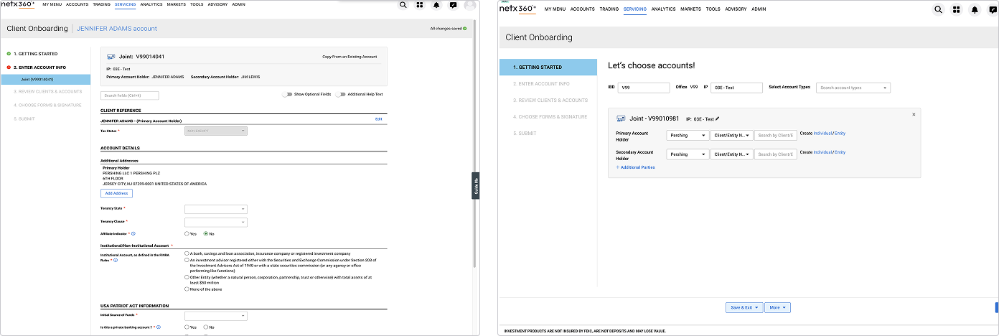

Designing for a System in Transition
BNY Pershing was consolidating two platforms into one. I helped reimagine how advisors open accounts and move assets—two workflows that touch millions of dollars daily but were failing users at every turn.
| Dimension | Details |
|---|---|
| My Role | Studio Designer (collaborative team, I designed the To-Do List pattern for NAO and the collapsing stepper for Asset Movement) |
| Team | 2 Studio Designers, Design Lead, Product Partners, User Research Team |
| Timeline | ~8 months |
| Outcome | Validated designs ready for future development as platform consolidation continues |
Two platforms, one future
BNY Pershing's Wealth Services group operates two platforms: NetX360+, a legacy system used by traditional broker-dealers and their advisors, and Wove, a newer platform built for RIAs. The company's strategy is to eventually consolidate these into a single unified experience—Wove—with different features white-labeled based on client needs.
But you can't flip a switch. NetX360 has decades of features that Wove doesn't yet support. The transition happens piece by piece, workflow by workflow.
Our team was asked to envision what two critical workflows—New Account Opening and Asset Movement—should look like in this future state. Not incremental improvements to the legacy system, but a rethinking of how these experiences should work when built from the ground up.
Platform context diagram or visual showing NetX360 → Wove transition
The Research Revealed a Common Enemy
Before diving into solutions, our research team conducted extensive discovery. The Custody Client Research surveyed clients across key personas—advisors, operations, client associates, compliance managers, and senior leaders. A separate NAO Design Validation study conducted moderated sessions with advisors, CSAs, and home office personas to understand the current experience in depth.
The findings were stark. When asked to rate pain points across all their responsibilities, advisors rated "Onboard clients and/or open accounts" as the single highest pain point—higher than trading, transfers, or any other task.

The primary challenge was clear:
"Manual and repetitive work emerged as a significant hurdle across various operational aspects."
But the research went deeper than that headline. Four themes emerged that would directly shape our design approach:
- Intuitiveness > Efficiency — Reducing human input (including calls to reps, tech engineers, help desks) is critical. Intuitiveness directly correlates to speed.
- Integration & Interoperability — Users want data entered once and populated throughout. They want connection to their existing tools.
- Less is more — Users want to complete only required fields. Less input means more time saved, more brainpower for other tasks.
- Information Organization — Users want systematic ways to track information, clearer communication about what's required vs. missing, and progress visibility.

A Form Pretending to Be a Workflow
Ten tools, thirty days
The research revealed something striking: participants reported using at least 10 separate tools as part of their account opening processes—Wealthbox, eMoney, Advent APX, Juncture, Envestnet, DST, NetX360, email, cloud storage, and handwritten notes.
The process took anywhere from 3 to 30 days depending on account type, compliance requirements, firm-specific processes, and how much back-and-forth was needed to gather client information.
This wasn't a usability problem. It was an ecosystem problem.

A form pretending to be a workflow
In NetX360, account opening presented itself as a 5-step process: Getting Started, Enter Account Info, Review Clients & Accounts, Choose Forms & Signature, Submit.
The reality was different. Behind "Enter Account Info" sat a seemingly endless scrolling form—dozens of fields spanning client details, account attributes, regulatory requirements, custodian features, and more. Users had no way to know how much was left, what was required versus optional, or whether they'd missed something critical.

"Once you get started, you just want to get through it"
The research mapped the full journey across six phases: Setup → Prepare → Input → Get signature → Check Status & Resolve Issues → Locate new account. Pain points clustered at every phase, but the worst were at "Check Status & Resolve Issues"—where NIGOs (Not In Good Order rejections) piled up.

The problems were specific and consistent across firms:
Configuration didn't flow. When users copied an existing client's configuration, details like e-delivery preferences wouldn't carry over. Joint account configurations would apply to one account but not the other.
"My eDelivery preferences, I should be able to do that across the board for everybody or my additional account information—none of this ever flows over. I want it to be the same across everybody across all account types. I can tell you this is very, very time consuming."
Systems didn't talk to each other. Users worked in parallel systems—NetX360 open alongside their CRM—manually syncing status between tools.
"Our CRM doesn't talk to NetX360 at all, so they're advisors basically doing it in parallel. They've got NetX360 open, and they've got the CRM open, so they have a Pershing account assigned to them, they go upload the documents into NetX360 to kick off this account opening. Then update my workflow and now the account got opened. In the CRM they mark the account got open, account open date."
Multiple accounts meant multiple envelopes. Opening five accounts for a client meant sending five separate signature envelopes—a frustration that should have been simple to solve.
"If we have multiple accounts, we'll open multiple accounts. We would like to have instead of five different envelopes go, if it's five different accounts, have one envelope go."
The cognitive load problem
Research revealed that users were drowning in information from disparate sources. Different terms were used across different experiences. Each tool had its own learning curve. Compliance minimums varied by firm.
What users wanted was clear:
- Information tips when they had questions about a term or step
- The ability to "toggle on" optional requirements if they had that information
- Checklists of missing or required info so they could track what was pending
- The ability to send forms to clients for signatures or to gather missing information

The information gap
Research surfaced another critical finding: advisors rarely have all the information they need during onboarding. They collect what they can, then have to chase clients for missing details—income verification, beneficiary information, regulatory disclosures.
Users wanted to move through the process with missing or pending information, then easily enter it when they had it. They wanted integration with their CRM and financial planning tools. And they wanted the ability to send forms to clients directly rather than playing telephone with sensitive data.

Reframing the problem
The research painted a clear picture. This wasn't about making forms shorter or interfaces prettier. It was about four fundamental problems:
- Visibility — Users couldn't see where they were, what was done, or what was blocking them
- Flexibility — Linear forms didn't match non-linear work; users needed to jump around
- Integration — 10+ tools meant constant context-switching and manual data entry
- Communication — Missing information required chasing clients through separate channels
Our design benchmark became the "Turbo Tax-like experience" that research participants referenced—guided, intuitive, and flexible enough to handle complexity without hiding it.
The Core Question
"How might we make a complex, multi-participant workflow navigable without hiding its true complexity?"
Exploring the Solution Space
Before landing on a final direction, we systematically explored different patterns across multiple dimensions. The research gave us clear problems to solve; now we needed to find the right structural approach.

Pre-flow: Reducing complexity before it starts
One insight from research was that users spent too much time configuring accounts that could have been set up faster with the right upfront questions. We explored a pre-flow pattern that would capture key decisions—custodian, account type, sub-type—before entering the main form.
This served two purposes: it reduced the number of irrelevant fields users would see (by filtering based on account type), and it gave users a sense of momentum before hitting the longer form sections.

Navigation patterns: Three competing approaches
For the core flow, we explored three distinct navigation patterns:
Approach 1: Sidebar stepper
A traditional stepped sidebar showing major sections (Client Details, Account Details, Documents, Funding Instructions, Review). Linear, familiar, but limited visibility into sub-tasks.

Approach 2: To-Do dashboard
A fundamentally different model—presenting the entire workflow as a task list with progress percentages. Sections would show completion status and expand to reveal remaining items. This approached NAO as a project to manage rather than a form to fill out.

Approach 3: Full-page form with progress
Keeping the form as the primary experience but adding progress indicators and section navigation. Less structural change, more incremental improvement.
The questions we were solving for
The exploration phase surfaced key design questions we needed to answer:
- Where should the To-Do list / stepper be on the page? Sidebar? Top? Collapsible?
- Where is the "Next" button? Fixed at bottom? Inline with content? In the navigation?
- How do we handle sub-flows? Modal? Full page? Dedicated flow?
- What's the right level of granularity? Major sections only? Every field group?
These weren't just visual decisions—they had implications for how users would understand and navigate the complexity.

The collaborative flow
One exploration directly addressed the research finding about advisors lacking complete information. We designed a flow where advisors could invite clients to fill in their own protected personal information (PPI)—things like Social Security numbers, income details, and financial information that clients might not want to share verbally.
The flow branched: advisors would collect basic contact information, then send a secure link to clients. Clients would fill in their section, the data would merge into the account, and both parties could see what was complete and what was pending.

This concept influenced the final design—the "Send to client" toggle that appears on form sections came directly from this exploration.
The To-Do List pattern emerges
After exploring multiple approaches, the To-Do List pattern emerged as the strongest solution. It combined the progress visibility of the dashboard approach with the navigational clarity of the sidebar stepper.
The key insight: instead of either a linear stepper OR a task dashboard, we could have both—a persistent navigation that shows every section, with completion status visible at a glance and the ability to jump to any section at any time.

KYC: A research-driven separation
One specific change came directly from validation research. Users told us that Know Your Customer (KYC) information—broker dealer affiliations, regulatory disclosures—should be separate from basic client details. These were compliance requirements that felt out of place mixed in with contact information.
In early explorations, KYC fields were embedded within Client Details. Based on feedback, we separated KYC into its own section with clear sub-categories: Broker Dealer Affiliations and Regulatory.

Validating with clients
We tested the designs with 9 participants from both Pershing clients (Citi, Davenport, Lincoln, HTK, Ameriprise) and non-Pershing firms (Neuberger Berman, Treasure Valley Financial Planning, NYLife Securities, T. Rowe Price).

What worked
The To-Do List resonated immediately. Participants called it "a useful roadmap for tracking progress" and "a helpful checklist to guide users through the process." They valued being able to verify completion of each step and navigate non-linearly.
"The to-do list palpably reduced user cognitive load by indicating progress, location, and completion of steps in the NAO process."
The pre-flow logic landed. Participants understood the setup questions, found the entry points clear, and intuited features like "copy existing clients" without explanation.
What needed refinement
Groups and groupings caused confusion—the account type selection needed clearer organization. KYC placement was validated as correct in our revision. And "Submit" didn't mean "created"—we were conflating submission with completion.
Where Is This Money Going?
Asset Movement has a different shape than account opening. It's more transactional—move money from here to there—but the legacy experience made even this simple concept feel dangerous.
Users entered Asset Movement from multiple places depending on how they'd been trained: the Balance screen, the Profile tab, or Servicing Asset Movement. Forms lived on a different screen than the asset movement itself, forcing reviewers to manually match documents to requests.
The deepest pain point was directional confusion:
"I'm scared somebody's going to click 'to' and send somewhere totally different because you didn't choose what you were trying to do from the beginning."

Two personas, two approaches
Our research identified two distinct user types with different needs:
Advisors initiated transfers occasionally, needed guidance through the process, and cared most about not making mistakes with client money.
Home Office / Operations staff processed transfers all day, every day. They needed speed and efficiency—the ability to see everything at once and move fast.
We explored designs for both personas, knowing we might need different experiences or a flexible system that could adapt.
Exploring the power user experience
For operations staff, we explored a single-page approach where everything was visible at once: Assets, Schedule, Method, and Documents all on one screen with a Transfer Details sidebar showing the running summary.

This approach prioritized speed and scannability. Users could see the entire transfer at a glance, fill in what they needed, and submit without stepping through multiple pages.
However, we ultimately paused development on the power user experience to focus on the advisor flow. The advisor persona had clearer near-term priority, and the patterns we established there could inform the power user experience later.
The Collapsing Stepper
The worksheet stepper: First iteration
For advisors, our first iteration used a worksheet approach with a horizontal stepper: Accounts → Assets → Schedule → Method → Documents → Submit. Each step was a separate page within a modal.

We tested this approach and received mixed feedback:
- Users liked the step-by-step guidance
- But the document step caused confusion—users thought it was a summary, not a signature requirement
- Firms had different requirements for documentation and verbal authorization
- Users expected documents to be sent to clients for signature, not signed by the advisor
- The separation of steps made it hard to see the full picture
"Thought Documents section was a summary page of transfer."
"Expected after submitting that the documents would be sent to client to sign."
The collapsing stepper: Second iteration
Based on feedback, I redesigned the step structure as a vertical collapsing pattern. Instead of separate pages, each step lives inline on the same screen. As users complete a step, it collapses into a summary card showing just the essential information—with an Edit button to go back if needed.

This solved multiple problems:
Progressive summary building. As each step completes, it collapses to show just the essential info. By Review, users see the full transfer picture without scrolling back through steps.
Edit without losing context. Every completed step has an Edit button. Users can go back without starting over or losing work.
Direction always visible. Once accounts are confirmed, "Hayden Oswin Individual → JP Morgan Chase" stays locked at the top. No more fear of sending money somewhere unintended.
Saved Instructions at point of need. Research showed users wanted to reuse common transfers. Now they see saved and recently used instructions immediately when selecting the destination.

Method follows asset type
One key change came from our design lead: instead of asking for the transfer method upfront, we ask what assets are being transferred first. The available methods then filter based on what makes sense for that asset type.
This prevents impossible combinations and removes cognitive load from users who might not know which methods apply to their situation.

The Common Thread
Looking across both workflows, the design principles are consistent:
| Principle | NAO Implementation | Asset Movement Implementation |
|---|---|---|
| Make progress visible | To-Do List with completion states | Collapsing stepper with summary cards |
| Support non-linear work | Click any section to jump | Edit buttons on every completed step |
| Show the full picture | Nested sections reveal scope | Progressive summary builds to Review |
| Surface what users need | Pre-flow captures key decisions | Saved Instructions at destination selection |
| Be honest about complexity | All steps visible upfront | All steps visible, collapsing as completed |
The underlying insight is the same: in complex workflows, the answer isn't to hide complexity. It's to make complexity navigable.
The outcome
Neither workflow shipped—not because the designs failed, but because they're vision work for a platform still being built. Wove's core features need to come first. These designs are validated and documented, ready for implementation when the roadmap prioritizes them.
For NAO:
| Research Finding | Design Response |
|---|---|
| Users can't track progress across multi-participant workflows | To-Do List shows completion status for every section |
| Linear forms hide true complexity | Non-linear navigation lets users jump to any section |
| Advisors rarely have all client information | Collaborative flow with "Send to client" capability |
| KYC feels out of place in client details | Separated KYC into dedicated section |
| Configuration doesn't copy correctly | Pre-flow captures key decisions before the main flow |
For Asset Movement:
| Research Finding | Design Response |
|---|---|
| Direction confusion causes fear | From/To visible at all times, locked after confirmation |
| Document step confused with summary | Clearer labeling and progressive disclosure |
| Firms have different authorization requirements | Flexible document handling |
| Repetitive transfers require manual re-entry | Saved Instructions and Recently Used surfaced at point of need |
Reflection
This project taught me the difference between designing a feature and designing for a system in transition.
We weren't just improving forms. We were establishing patterns that would need to scale across an entire platform consolidation. The To-Do List and collapsing stepper aren't just solutions for NAO and Asset Movement—they're approaches to making any complex workflow navigable.
The exploration phase was critical. We didn't jump to the To-Do List pattern—we arrived at it by systematically evaluating alternatives against research findings. The dashboard approach, the sidebar stepper, the collaborative flow—each exploration taught us something about what users needed and what the structure had to support.
The hardest part was designing for a future we couldn't fully see. Wove will evolve. Requirements will change. What we could do was establish principles flexible enough to adapt: make progress visible, support non-linear work, show the full picture, surface what users need, and be honest about complexity.
Vision work doesn't always ship immediately. But it shapes what's possible when the time comes.